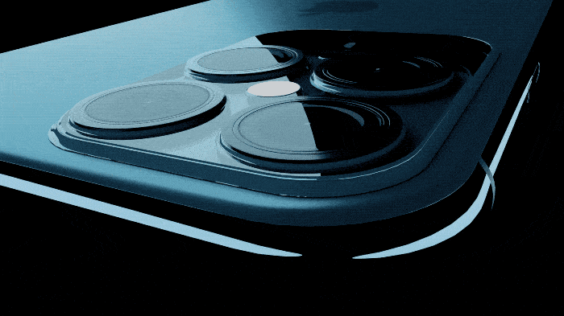

iPhone 12 Pro
Tech SpecsBuy iPhone 12 and iPhone 12 Pro directly from Apple with special offers from AT&T, T‑Mobile/Sprint, and Verizon. See offers>
iPhone 12 Pro
It's a leap year.

5G goes Pro. A14 Bionic rockets past every other
smartphone chip. The Pro camera system takes low-light
photography to the next level — with an even bigger jump on
iPhone 12 Pro Max. And Ceramic Shield delivers four times
better drop performance. Let’s see what this thing can do
From $41.62/mo. or $999 before trade‑in1
Less bezel, more screen.


Kicks Glass.

Ceramic Shield, tougher than any smartphone glass
Surgical-grade

stainless steel.

Four finishing touches.
Pacific Blue, Gold, Silver, and Graphite
Super fast wireless
Hello 5G.

5G transforms iPhone with accelerated wireless speeds and better
performance on congested networks.5 Now you can download huge
files on the go or stream high-quality HDR movies. Without. All. The
Lag. iPhone also has the most 5G bands of any smartphone so you
get 5G in more places. And all that speed opens up amazing
possibilities for the future of apps.
iPhone makes the most of 5G
A14 Bionic
The Only thing even
close was our last chip.
A14 Bionic is the first 5-nanometer chip in the industry, with
advanced components literally atoms wide. Forty percent
more transistors rev up speeds while increasing efficiency
for great battery life. And a new ISP powers Dolby Vision
recording — something no pro movie camera, let alone any
other phone, can do.
Generations ahead of any other
smartphone chip
Up to
50% faster
CPU and GPU than any other smartphone chip
50% faster
CPU and GPU than any other smartphone chip
11.8billion
transistors
transistors
First
5nm
Chip in the industry
5nm
Chip in the industry
Upto
80%
faster Neural Engine
80%
faster Neural Engine
16-core
Neural Engine
Upto
70%faster
machine learning accelerators
70%faster
machine learning accelerators
LiDAR Scanner
AR at the speed
of light.
The LiDAR Scanner on iPhone 12 Pro measures how long it takes light
to reflect back from objects, so it can create a depth map of any
space you’re in. Because it’s ultrafast and accurate, AR apps can now
transform a room into a realistic rainforest or show you exactly how a
new sneaker will fit.
NASA is developing LiDAR technology
for Mars missions
A depth map in nanoseconds
Pro camera system.
A new day for night mode.

Night mode comes to both the Wide and Ultra Wide
cameras, and it’s better than ever at capturing
incredible low-light shots. LiDAR makes Night mode
portraits possible. And the Wide camera lets in 27
percent more light, for greater detail and sharper
focus day or night.
Wide camera with ƒ/1.6 aperture
captures 27% more light
New 7‑element Wide lens for
edge‑to‑edge sharpness
New OIS makes 5000 adjustments per
second
LiDAR delivers up to 6x faster autofocus
in low light
12 Pro Max.
Camerus maximus.

The bigger iPhone maxes out the Pro camera
system. A 47 percent larger sensor and larger pixels
dramatically increase the amount of light gathered
on the Wide camera. A new OIS stabilizes the
sensor instead of the lens so your shots are steady
— even when you’re not. And the new 65 mm
Telephoto camera lets you zoom in tighter on
portraits.
87% better
low‑light photos
low‑light photos
5x optical
zoom range
zoom range
Bigger
1.7 μm pixels
1.7 μm pixels
New sensor-shift
optical image
stabilization
optical image
stabilization
Night mode portraits on the Wide camera give you vivid color, as well as beautiful bokeh
that accentuates lit buildings, streetlights — any background lights.

Machine learning on iPhone 12 Pro is
even better at separating the subject
from the background. And creative controls let you adjust the background
blur and light on faces.
More detail. In the blink of AI.
Smart HDR 3 automatically refines highlights, shadows, and contours. Even at
midday, you can see detail in her face and shadows that graduate all the way to
true black.
Smart HDR 3 captures every bit of
golden hour magic, pulling out all the
texture in the rock, while staying true to
the subtle blues of the sky.

Smart HDR 3 dials in the white balance, and the sea foam holds its shape
and definition despite all the motion.
Beyond faces, Smart HDR 3 uses
machine learning to recognize scenes,
so it can bring out the cracks in the
ground and the roughness of the hill
without increasing noise in the sky.
Shot on iPhone 12 Pro Max.

2.5x optical zoom on the 65 mm Telephoto camera lets you see all that close-up
detail without being right next to your subject
Bigger pixels on the Wide camera help reveal intricate patterns, subtle textures,
and incredible detail throughout the shot — even when you’re shooting in
available light.
Colors are remarkably true to life in almost any light, like all the translucent reds
in her outfit, and the saturated neon hues of the diner behind.
A snapshot of each camera.

iPhone
12 Pro
26 mm focal
length
1.4 µm pixels
ƒ/1.6 aperture
100% Focus Pixels
7-element lens
OIS
iPhone
12 Pro Max
26 mm focal
length
1.7 µm pixels
ƒ/1.6 aperture
100% Focus Pixels
7-element lens
Sensor-Shift OIS
Apple ProRAW.
For an absurd
amount of
creative control.
ProRAW gives you all the standard RAW
information, along with the Apple image
pipeline data. So you can get a head start
on editing, with noise reduction and
multiframe exposure adjustments already
in place — and have more time to tweak
color and white balance.

Dolby Vision recording
60 times more colors.
Infinitely more spectacular.
First camera ever to record in Dolby Vision
iPhone 12 Pro jumps from 8- to 10‑bit HDR recording,
capturing 700 million colors for much more lifelike video.
Then it goes one better, recording in Dolby Vision — the
format used by film studios. You can even edit Dolby Vision
video and use AirPlay to see every last bit of the difference
on the big screen.
Air Play streams your 4K Dolby Vision video to Apple TV and
smart TVs.6
Now every night
is movie night.
The Wide camera’s larger sensor brings way more detail out of the
shadows. And for the first time, you can take Night mode Time‑lapse
videos with a tripod to capture scenes with dramatic motion. Now
even your movies can pull an all-nighter.
87% better low-light video with
iPhone 12 Pro Max
New ISP with improved noise
reduction for more detail
TrueDepth camera
It's never to late to take
another Night mode selfie.

Night mode comes to the front camera, bringing all that low-light
detail and natural color to your favorite subject. Deep Fusion, Smart
HDR 3, and Dolby Vision recording are now on the TrueDepth
camera, too. So you’ll look your best in any light.
Super Retina XDR Display
An infinity pool of pixels.
How do you make our brightest display even better? Make it
bigger. A new design with flat edges and our flexible custom
OLED allowed us to push the screen’s amazing color,
brightness, and contrast right to the very edge.
Up to
1200 nits
peak brightness
for HDR photos and movies
2,000,000:1
constant ratio for true blacks
and bright whites
Over 3.4 million pixels in 12 Pro Max,
the most ever in an iPhone
MagSafe accessories
Everything just clicks
Instant attraction.

Each piece magnetically snaps together like magic.
Stack and go.
Snap on a case, a wallet, or both. (Fear not, the
wallet is shielded so it’s safe for credit cards.)
Turbo Chargeable.
Magnets align themselves
perfectly every time for faster
wireless charging.
Privacy is built in.
iPhone is designed to protect your information. Face ID data doesn’t
leave your iPhone and is never backed up to iCloud or anywhere else.
iOS shows you an app’s privacy practices before you download it.
When you use Apple Pay, your card number isn’t shared with
merchants. And the list goes on.
We reduced our
carbon footprint.
By thinking inside
the box.
Carbon savings equal to 450,000
fewer cars on the road per year
iPhone 12 Pro works with existing power adapters, EarPods
with Lightning Connector, and USB‑A to Lightning cables.
Because there are billions of those out in the world, new
ones often go unused. So we’re removing them from the box
— across the entire iPhone family. This reduces carbon
emissions and avoids the mining and use of precious
materials. It also shrinks the package, allowing more boxes
per shipment and fewer shipments overall. We’re
transitioning our manufacturing partners to renewable
energy as well. Altogether, this eliminates over 2 million
metric tons of carbon emissions annually.
To charge your new iPhone, you can continue to use your
USB‑A to Lightning cable. Or you can take advantage of fast
charging with the USB‑C to Lightning cable now included in
the box, which works with existing USB‑C power adapters
and computer ports.
Even a little things are a big deal

Best worldwide coverage
iPhone 12 Pro has up to 20 5G
bands and up to 32 LTE bands
— more than any other
smartphone — for the most extensive coverage around the
world.5

Twice the starting storage
iPhone 12 Pro starts at 128GB
of storage, doubling the space
for things like photos and
videos.

More shots, less lag
Snapping shots quickly?
iPhone intelligently adapts,
speeding up processing so you
can capture all the action.

Spatial audio with Dolby Atmos
Sound moves around you in 3D
space, so you feel like you’re
inside the action.

Have two numbers
Dual SIM with eSIM lets you
have both a personal number
and a business number on the
same iPhone7

Recycled rare earth in magnets
iPhone 12 Pro uses 100%
recycled rare earth elements in
all magnets, including those in
our MagSafe accessories.

Use AR to see it
from every
angle.
Open this page using Safari
on your iPhone or iPad.